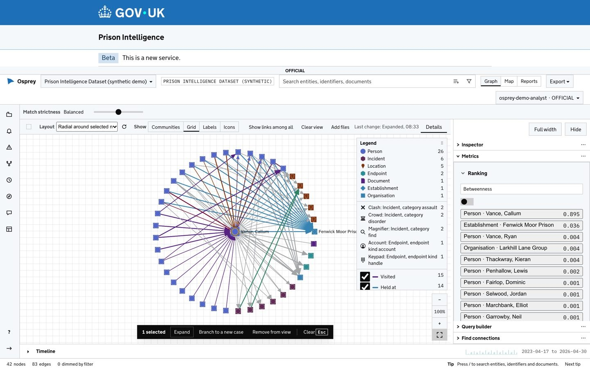
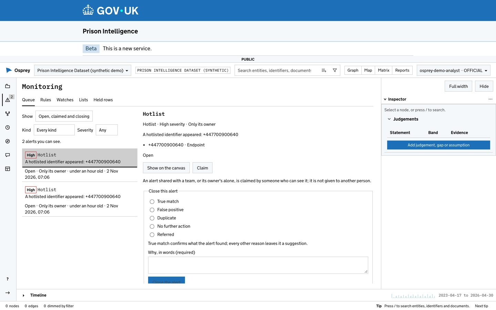
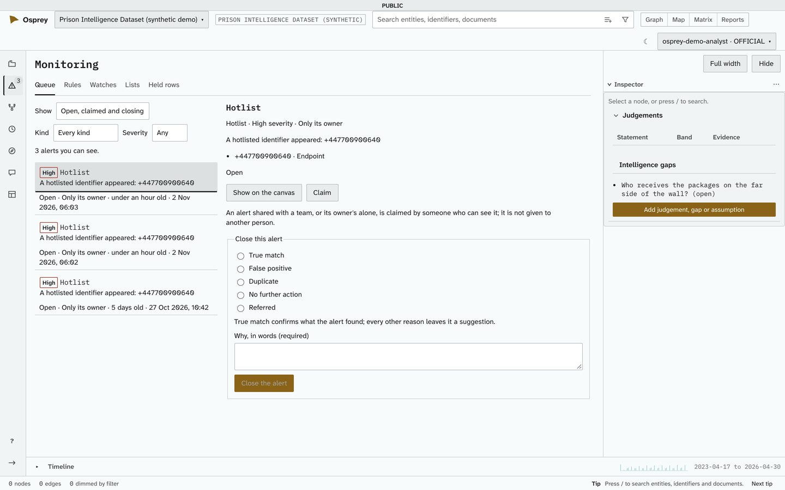
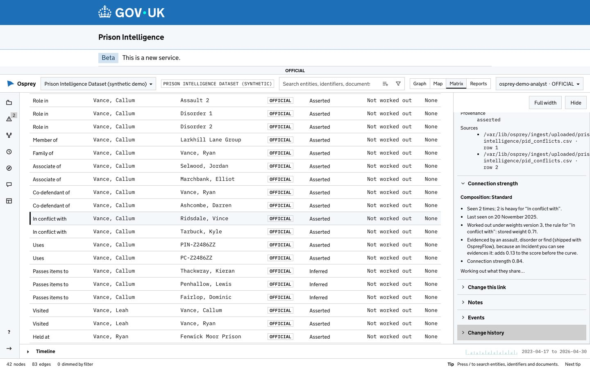

UK public sector
OspreyFlow for the UK public sector
OspreyFlow has a fully featured UK public sector option, designed to meet the GDS Service Standard, for every UK department. It is the whole product under the GOV.UK Design System's look, for services on a gov.uk domain: the network, the map, the timeline, the Matrix view, reports, the Ingest Studio and monitoring.
What "designed to meet" means. Only a service assessment panel decides whether a service meets the Service Standard, and it looks at a service (a team running a product for its users), not at a product alone. OspreyFlow carries its own evidence for what a product can show, from a re-audit of the finished product on 2 November 2026. Three independent checks are planned and not yet done: an independent accessibility audit, a penetration test and a data protection impact assessment (DPIA).

The option: the GOV.UK theme, chosen at install
The GOV.UK theme is a deployment setting, not a separate edition or a fork. One setting gives every page the GOV.UK header and footer, the phase banner and the service's own name, and the sign-in page follows it. Everything else is the same product, with the same features and the same tests.
- For services on a gov.uk domain. The GOV.UK look belongs to services on a gov.uk domain, and OspreyFlow offers it for those alone. A gov.uk service is served over HTTPS, so it runs on Small or Enterprise: OspreyFlow refuses a one-computer (Lite) deployment at a gov.uk address. The theme stays available on a
localhostaddress, for a demonstration on one computer. - Your service's name, not ours. The install asks for the service's name, the organisation and the phase (alpha, beta, live or none), and refuses a GOV.UK install without a service name.
- Switch back at any time. The same deployment can run in OspreyFlow's own look; nothing about the data or the cases changes.


Starters: a theme and a domain in one command
A starter is a theme and a domain chosen at install. It fills in the answers the install would otherwise ask (the look, the GOV.UK service's name, organisation and phase, and the demonstration data), and every answer can still be changed. Every domain's ontology stays available to every case, whichever starter you choose.
| Domain | OspreyFlow theme | GOV.UK theme |
|---|---|---|
| Crime | ospreyflow-crime | govuk-crime |
| Anti-money laundering | ospreyflow-aml | govuk-aml |
| Fraud | ospreyflow-fraud | govuk-fraud |
| Cyber | ospreyflow-cyber | govuk-cyber |
| Blank | ospreyflow-blank | govuk-blank |
ospreyflow install --starter govuk-crime --service-name "Analyse crime intelligence" --organisation "Your organisation"
Each starter except Blank comes with its own synthetic demonstration data. Several deployments can run side by side on one machine, each with its own folder, address and data, so a team can compare a GOV.UK deployment with another before choosing.
Designed to meet the GDS Service Standard, point by point
The evidence below comes from OspreyFlow's own re-audit of the finished product, monitoring included, on 2 November 2026. Each point says where it stands and what is still open. "Met in the product" means the product's own evidence for what a product can show exists, named; it is not the result of a service assessment. Four points are about the team running the service, and no product can meet them on a department's behalf.
-
1. Understand users and their needs
The service team's
The demonstration cases were written from analysts' tasks. User research with your own analysts is the service team's.
-
2. Solve a whole problem for users
Met in the product
One case runs from loading the sources to a finished report. Monitoring works end to end: a rule written as a sentence, previewed, alerting into one queue, closed with a reason and added to a report pack. The wider journey, such as requesting access, is the service's.
-
3. Provide a joined-up experience
Partly
One sign-in, and a starter sets one look and one service name for the whole deployment. Open: the dashboards (Apache Superset) keep their own look, and there are no pages that work without JavaScript.
-
4. Make the service simple to use
Partly
Rules are plain sentences with a preview; closing reasons are a short, fixed list; approval screens name people, not identifiers. Open: usability testing, and GOV.UK form patterns such as the error summary.
-
5. Make sure everyone can use the service
Partly
The Matrix view, 143 automated accessibility scans and 487 keyboard tests (see Accessibility). Open: text equivalents for the map and the timeline; the independent accessibility audit is planned.
-
6. Have a multidisciplinary team
The service team's
The team that runs the service is the department's.
-
7. Use agile ways of working
Supported
Built in planned steps, each merged with its tests and guides, and every design decision recorded. The service's own governance is the department's.
-
8. Iterate and improve frequently
Met in the product
Signed releases;
ospreyflow updateverifies a release before it installs it and can roll back;ospreyflow applyapplies a changed setting. The release cadence is the service's. -
9. Create a secure service which protects users' privacy
Partly
Access control inside every database query, a second person for the decisions that matter, secrets readable by their owner alone (see Security by design). Planned: a penetration test and a DPIA. Open: a software bill of materials per release, and tighter outbound network rules for the cloud deployments.
-
10. Define what success looks like and publish performance data
The service team's
Measures of success and their publication are the service's. OspreyFlow does not yet publish telemetry about its own performance.
-
11. Choose the right tools and technology
Met
An open stack, each choice recorded as a decision, behind four typed interfaces with conformance suites, so a component can be replaced.
-
12. Make new source code open
Met
Apache License 2.0, and a licence check that fails the build when a dependency's licence is not allowed.
-
13. Use and contribute to open standards, common components and patterns
Partly
OpenID Connect, OpenAPI 3.1 (published at the deployment's address and versioned with the release), STIX 2.1, vector tiles and Parquet; the GOV.UK theme. Open: GOV.UK form patterns, and contributions back to the common components.
-
14. Operate a reliable service
Met in the product
Health checks (
ospreyflow doctorandstatus), backup and restore, three deployment modes, and several deployments side by side. Open: telemetry and alerting on the platform's own health; on-call is the service's.
Accessibility
WCAG 2.2 level AA is the target for every screen, and OspreyFlow's specification treats it as a floor rather than an aspiration. Every change is checked automatically.
- Every screen is scanned for WCAG 2.0, 2.1 and 2.2 A and AA issues, in the light and dark themes and under the GOV.UK theme where it applies: 143 scans of 42 screens and their states, and 22 of the guided install page.
- A check that every labelled form field's spoken name contains the words on screen, for people who use speech recognition. The re-audit found fourteen fields that did not, and fixed them.
- Every action on the network graph is reachable by keyboard, each proven by its own test: 487 keyboard tests.
- The Matrix view shows the network as tables a screen reader can walk, and the graph announces which item has focus.
- Colour never carries meaning alone: each entity type has its own shape as well as its own colour.
Known gaps, said plainly. The map does not yet list its places as text; the timeline's counts are not yet available as a table; no testing with assistive technology has been done yet; and the dashboards have not been checked.
A draft accessibility statement, in the format of GOV.UK's sample statement, is written for a department to adopt. It is marked as a draft, lists the known issues and the parts not yet checked, and sets no status until the independent audit has been done.

Security by design
-
Access control where the data lives
Clearance, unit and handling codes are applied inside every database query, in the store's own adapter, never after the data has been read. A record you may not see is absent, and so is any count, path length or chart that would reveal it. Conformance suites test those three ways a hidden record could leak.
-
Your data stays on your infrastructure
OspreyFlow runs where you run it: one computer, a server in your own AWS or Azure account, or your own Kubernetes cluster. Nothing leaves a deployment by default.
-
Model engines, and what may leave, per dataset
The deployment's own models answer by default. An administrator may enable hosted engines, each with its own key. Material is sent to one only when its handling code allows it and every dataset it comes from allows that engine; every dataset starts at "never sent". Each engine shows whether a privacy contract covers it, and every answer names the engine that gave it.
-
Sign-in and a second person
Sign-in by OpenID Connect with PKCE, which works with your own identity provider. A second person approves a rule for the whole deployment and the close of a high-severity alert, and the person who proposed it can never approve it.
-
Secrets and the API
Secrets on disk are readable by their owner alone. The API's description is published at the deployment's address, behind sign-in, versioned with the release.
-
HTTPS where people connect
Small and Enterprise serve HTTPS only, with a certificate obtained and renewed automatically, and reach their managed services over TLS. Lite answers on its own computer alone.
PlannedA penetration test (CHECK or CREST), a DPIA, and a software bill of materials with each release.
Deployment options
One product, three ways to run it: the same containers, the same workspace and the same Admin area in each.
-
Lite: one computer
For a pilot or a demonstration. Plain HTTP on a
localhostaddress, answering on that computer alone and never opened to a network. Not for a gov.uk service. -
Small: one cloud server
A server in your own AWS or Azure account, with the cloud's managed PostgreSQL and object storage and its daily backups, served over HTTPS at your domain.
-
Enterprise: a Kubernetes cluster
EKS or AKS, three or more nodes, the same services as replicas, installed with the Helm chart. Served over HTTPS at your domain.
-
Several side by side
Named deployments on one machine, each with its own folder, address and data, listed with
ospreyflow deploymentsand switched withospreyflow switch.
The planned independent checks
These are planned, to be commissioned by the department or the supplier. None has been done yet.
- PlannedAn independent accessibility audit against WCAG 2.2 AA, with testing in JAWS, NVDA, VoiceOver, TalkBack, Dragon and screen magnification. The accessibility statement is then completed from its findings.
- PlannedA penetration test by a CHECK or CREST provider.
- PlannedA data protection impact assessment (DPIA), from a template OspreyFlow will provide, completed by the department for its own service.
Then, the service team's
- User research with the department's analysts, and usability testing.
- The team, its governance and its published performance measures (points 1, 6, 7 and 10).
- Alpha, beta and live assessments by a GDS or departmental assessment panel.
For every UK department
The UK public sector option is available to every UK department, agency and public body that runs a service on a gov.uk domain. Each runs it on its own infrastructure, under its own service name and organisation.
- Open source. Released under the Apache License 2.0, with no licence fee, so no department is locked in to a supplier.
- Open standards. Your identity provider, your data formats and your own hosting.
- The same product for everyone. Intelligence mapping, anti-money-laundering and fraud detection, and monitoring, whichever department runs it.
No department is named on this site as a user of OspreyFlow. Every screenshot shows a demonstration deployment, with an invented service name and synthetic data.